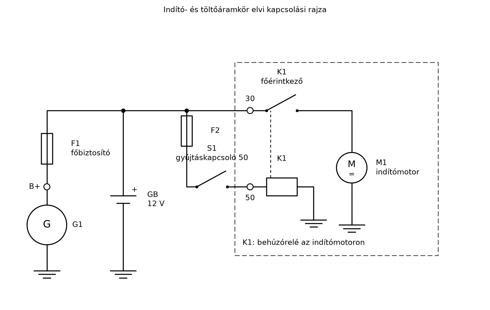

Egy műhelyben az ügyfél autóján reggelenként bizonytalanul indul a motor, a tompított fényszóró nem világít, és a műszercsoport akkumulátor-visszajelzője halványan dereng. A szerelőnek előbb meg kell állapítania, hogy a hiba az akkumulátorban, a generátorban, a kábelezésben vagy az indítómotorban van. A tüneteket nem szabad egyetlen alkatrész cseréjével elintézni: a villamos rendszer szerelése akkor szakszerű, ha a vezetékjavítást, a töltőkört és az indítókört együtt, gyártói adatok szerint ellenőrizzük. Ez az alfejezet a kézi szerelési műveleteket, a csatlakozójavítást, a világítás, az áramellátás és az indítás szerelését tanítja, a Áramút-alapú hibakeresés módszerére és a Kötések készítése és oldása alfejezetben tanult nyomatékbeállítási és kötésszerelési szabályokra építve.
Az alábbi ábra az indító- és töltőáramkört mutatja, ahogyan a gépjármű-villamossági rajzon dolgozunk. A 30-as ág az akkumulátor pozitív pólusából indul. Az indítómotor főárama közvetlenül a 30-as kapocsról, a behúzórelé (K1) főérintkezőjén át jut a motorra; az indítókábel nincs biztosítva. A gyújtáskapcsoló 50-es állása (biztosítón át) csak a behúzórelé tekercsét táplálja, így a kapcsolón csak a vezérlőáram folyik. A generátor (G1) B+ kapcsa a főbiztosítón (F1) át a 30-as ágra, vagyis az akkumulátor pozitív pólusára dolgozik; az akkumulátor, a generátor, a behúzótekercs és az indítómotor egyaránt a 31-es testen zár.

A gyakorlatban a járművön a pozitív kábelt gyakran piros vagy szürke, a testkábelt barna vagy fekete szín jelöli; a kapocsjelek az áramútrajz szerint azonosak. A méréshez a multiméter fekete mérőzsinórját 31-es testpontra, a pirosat 30-as, 50-es vagy B+ pontra kötjük. A rajz–jármű–mérés hármas itt azt jelenti, hogy ugyanazt a pontot az áramútrajzon, a járművön és a mérési helyen is azonosítani kell.
Definíció. Krimpelés (crimping): a csatlakozótű vagy kábelérvég hideg sajtolása, amelyben a hüvely és a vezetékerek képlékenyen (maradó módon) alakváltoznak, és gáztömör, nagy felületű fémes érintkezés jön létre; a jó krimpelés hideg kötés, nem igényel forrasztást, de nem bontható, és rontott krimpelés után a tűt cserélni kell.
Definíció. Zsugorcső: hő hatására zsugorodó, szigetelő és részben tömítő műanyagcső, amely a krimpelés vagy forrasztás helyét mechanikailag tehermentesíti és szigeteli.
Definíció. Forrasztott kötés: lágyforraszos kötés, amely a vezetékerek közé ón alapú segédanyagot olvaszt; a járművön csak ott alkalmazható, ahol a gyártó engedi, mert a forrasztás mentén merev töréspont alakulhat ki.
Definíció. Szabadonfutó szíjtárcsa: a generátor hajtószíjtárcsájában lévő egyirányú tengelykapcsoló, amely a motor egyenetlen járásából származó szíjlengést csökkenti.
Összefüggés. A villamos kötés ellenállása az áramút teljes ellenállásához adódik:
Ha a csatlakozó érintkezési ellenállása megnő, a fogyasztó kapcsain kisebb feszültség jelenik meg, és a kötés melegszik. Ezért a feszültségesés-mérés a szerelés utáni ellenőrzés legfontosabb lépése.
A feszültségesést mindig terhelés alatt mérjük, a vezeték vagy kötés két végére tett multiméterrel. Az alábbi ábra a három leggyakoribb mérési párt mutatja: (1) a pozitív indítókábel az akkumulátor + pólusától az indítómotor 30-as kapcsáig, (2) a testoldal a motorháztól az akkumulátor − pólusáig, mindkettő indítás közben, és (3) a töltőkör a generátor B+ kapcsától az akkumulátor + pólusáig, járó motornál, bekapcsolt fogyasztókkal. A HTML-változatban kiválasztható a mérési pont, ki-be kapcsolható a terhelés, és az átmeneti ellenállások állíthatók; terhelés nélkül a műszer 0 V-ot mutat, felcserélt zsinóroknál negatív számot.
Szabály. A jármű villamos vezeték javításakor az új vezeték keresztmetszete legalább az eredeti vezetékével egyezzen meg; a toldás legyen tehermentesített, vízmentesített, és ne kerüljön mozgó alkatrész vagy hőforrás közelébe.
Szabály. Légzsák/övfeszítő pirotechnikai gyújtókörét, nagyfeszültségű (HV) narancssárga vezetékét és adatbuszvezetékeket nem szabad házilag toldani; ott a gyártói utasítás dönt. A légzsák körében minden javítás előtt a gyújtást le kell kapcsolni, az akkumulátort le kell kötni, és ki kell várni a gyártó által megadott időt (ellenőrizendő: gyártói adat).
Előírás. A fedélzeti hálózat kapocsjelölésére a DIN
72552 szerinti hazai gyakorlatot használjuk: 30 akkumulátor
plusz, 15 gyújtáskapcsolás után, 50 indítás,
31 test, B+ generátor fő kimenet,
D+ generátor jel, 58/56a/56b világítási
kapcsok (ellenőrizendő a gyártói rajz szerint).
Továbbvitt eredmény. A vezetékjavítás, a töltőkör és az indítókör szerelési lépéseit később az elektronikus rendszerek (ABS/ESP, légzsák, ADAS) javításánál is alkalmazzuk: ha a kábelköteg sérült, csak így marad meg a rendszer galvanikus kapcsolata és jelintegritása. Ezt az Elektronikus rendszerek javítása: ABS/ESP, légzsák, komfort, klíma és ADAS alfejezet használja fel, különösen a csatlakozótűk cseréjénél és a feszültségesés-alapú hibakeresésnél.
A vezetékjavítási technológia jól meghatározott lépéssor, amelyet minden toldásnál be kell tartani.
Eljárás. Vezetékjavítás krimpeléssel és zsugorcsővel.
A recept fogásait és a kötések minőségét az alábbi képsor mutatja: csupaszolás az erek sérülése nélkül, a zsugorcső előzetes felhúzása, krimpelés racsnis fogóval a megfelelő fészekben, húzópróba, majd zsugorítás és több érnél a kötések eltolása. A nagyított részletek a helyes krimpet (erek a vezetőrögzítőben, szigetelés a szigetelésrögzítő fül alatt), a hibás krimpeket és a tiltott sodrás–szigetelőszalag javítást mutatják. A HTML-változatban a képsor lépésenként és galériaként is megnézhető.
Tilos. A krimpelést kombinált fogóval vagy laposfogóval „odanyomni”; a nem megfelelő sajtolás laza kötést, forró pontot és időszakos hibát okoz. A forrasztásnál ólommentes forrasz és gyanta alapú folyasztószer használata indokolt; savas folyasztószer nem használható, mert korrodálja az ereket.
Megjegyzés. A csatlakozótűk cseréje a fedélzeti hálózatnál különösen igényes. A régi tűt speciális kibontó szerszámmal oldjuk ki a műanyag házból, az új tűt a gyártói pozíció szerint pattintjuk be. A polaritást és a tűpozíciót az áramútrajz határozza meg; a rossz pozícióba beszerelt tű zárlatot vagy vezérlőegység-sérülést okozhat.
Szabály. Mit nem szabad javítani? A légzsák és övfeszítő gyújtókörét, a nagyfeszültségű narancssárga HV-vezetékeket, valamint sok adatbuszvezetéket a gyártó nem javítani, hanem cserélni írja elő, mert a toldás ellenállása, hossza és sodratgeometriája megváltozik, és ez a busz jelintegritását rontja. Az ilyen munkát a gyártói dokumentáció és a Elektronikus rendszerek javítása alfejezet szerint kell elvégezni.
A világítás hibakeresése a Áramút-alapú hibakeresés módszerét követi: tünet, hipotézis, mérés, ok, javítás, ellenőrzés. A tompított fényszóró nem égése esetén első lépés az izzó, a biztosíték, a relé, a kapcsoló, a testcsatlakozás és a foglalat feszültségesésének ellenőrzése.
Előírás. A fényszórók, az izzók és a világítási jelek beépítése és beállítása az ECE R48 előírás szerint, a gyári és a hatósági műszaki vizsga követelményei szerint történik; a pontos határértékek a mindenkor hatályos szabályozásban találhatók (ellenőrizendő: ECE R48 és a hatályos magyar műszaki vizsga előírás).
Eljárás. Akkumulátorcsere.
Eljárás. Generátor ki- és beszerelése.
Eljárás. Indítómotor ki- és beszerelése.
Az indítómotor három fő része: egyenáramú motor (armatúra, gerjesztés/kefék), behúzórelé, szabadonfutó fogaskerekes szerkezet.
A szétszerelésnél a kefék kopását a gyártói határral (pl. a minimális kefehossz 7 mm alatt cserés, ellenőrizendő) hasonlítjuk össze; ellenőrizzük az armatúra kommutátorát, a behúzórelé záróérintkezőjének átmeneti ellenállását és a szabadonfutó egyirányú zárását.
Számítás. Adott: indítómotor áramfelvétele ; az összekötő vezeték + test együttes ellenállása . Keresett: a feszültségesés és az indítómotor kapocsfeszültsége, ha az akkumulátor feszültsége .
Képlet: . Behelyettesítés: . A motor kapcsain: . Ellenőrzés: , rendben. A 0,56 V esés hidegindításkor már észrevehető, mert a motor fordulatszáma és a befecskendezésvezérlés is romlik.
Számítás. Adott: a generátor rögzítőcsavarja nyomatékra húzott. A nyomatékkulcs hossza . Keresett: a szükséges kézi erő .
Képlet: , amiből . Behelyettesítés: . Ellenőrzés: ez körülbelül 6,4 kg tömegnek megfelelő erő, amit nyomatékkulccsal kézben tartható. Ha valaki 100 N erővel húzza, a nyomaték 40 Nm, ami túlfeszítés, menettöréshez vezethet.
Ellenpélda (hibás gondolat). „Az akkumulátor feszültsége 12,3 V, tehát jó.” Ez téves, mert a feszültség önmagában nem mutatja a kapacitást és a hidegindító képességet; terhelés alatt kell mérni, vagy akkumulátorvizsgáló műszerrel terheléses tesztet végezni.
A javítás után az alábbi ellenőrzőlista szerint járunk el:
Egy benzines ügyfélautó reggelente alig indult, délután jól. A műhelyben az akkumulátor feszültsége 12,3 V volt; a generátor B+ és az akkumulátor plusz között járó motornál, bekapcsolt fényszóróval és hátsóablak-fűtéssel 0,7 V feszültségesés mutatkozott, ami a korrodált akkupozitív kábel érintkezésére utalt. A kábelsaru és a kábel cseréje után a töltőfeszültség 14,1 V-ra emelkedett, és a hidegindítás is megjavult. Tanulság: a feszültségesés-mérés a generátor és az akkumulátor között is kulcsfontosságú, nem elegendő csak az akkumulátort kicserélni.
Munkalap: generátor és indítómotor szerelése, töltés ellenőrzése
Cél: a gyártói adatok szerint a generátor és az indítómotor ki- és beszerelése, majd a töltő- és indítóáramkör ellenőrzése. Jármű- és adatazonosítás: alvázszám, motorkód, generátor típusa, indítómotor típusa, akkumulátor típusa és regisztrációs igénye. Szerszámok: multiméter CAT III (ellenőrizendő: mérési kategória), lakatfogó, nyomatékkulcs, szíjfeszességmérő, általános kéziszerszámok, csatlakozó-kibontó, krimpelő, hőfúvó. Anyagok: új vezeték, érvégek, zsugorcső, akkumulátor-saru védő, csavarbiztosítás.
Biztonsági korlát. A feladat tanműhelyi környezetre, oktató felügyeletére és a gyártói javítási utasítás betartására vonatkozik; a megadott értékek tanulási példák. A jármű alá csak mechanikusan reteszelt műhelyi járműemelőn vagy bakon szabad bemenni, a kipufogógáz zárt térben csak elszívással üzemeltethető.
Figyelem. Lekötéskor a negatív sarut oldjuk először, felkötéskor a negatív sarut kötjük vissza utoljára, hogy a szerszám ne zárhassa a pozitív pólust a testhez. Az ólom-savas akkumulátor töltése közben hidrogén képződik; nyílt lángtól távol kell tartani.
Környezetvédelem. A régi akkumulátor ólmot és savat tartalmaz, veszélyes hulladék; csak gyűjtőhelyre szabad leadni, nem kommunális hulladékba. A sérült akkumulátorból kifolyt sav feltakarítása egyéni védőeszközzel, lúgos közömbösítéssel történik.
Számozott munkalépések:
Ellenőrzési pontok. A generátor B+ kimenete és az akkumulátor pozitív közötti feszültségesés max. 0,3 V; az indítókábel esése max. 0,5 V (tanulási példák, ellenőrizendő). A hibakódmentesség és a töltésfigyelő visszajelző kikapcsolása szükséges.
Tipikus hibák a munkában. A szíj túlfeszítése csapágyterhelést okoz, a laza szíj csúszik és csipog; a generátor B+ kábelét nem húzzák nyomatékkulccsal, így később forró kötés alakul ki; a régi szabadonfutó szíjtárcsát megtartják, pedig az új generátorral együtt cserélendő.
A válaszokat a Megoldások elején találod.
1. feladat (A). Írd le a szakszerű vezetékjavítás lépéseit (legalább hatot) a helyes sorrendben.
2. feladat (A). Egészítsd ki: az akkumulátorcsere előtt a(z) __ sarut kötjük le először, visszakötéskor ezt __ kötjük; ennek oka, hogy a szerszám ne zárhassa rövidre a __ pólust a testtel.
3. feladat (B). A töltőáramkörben a generátor B+ kimenete 14,2 V, az akkumulátor pozitív pólusán 13,1 V. Mekkora a feszültségesés? Jó-e ez az érték, ha a gyakorlati határ 0,3 V? Mire utal a hiba?
4. feladat (B). A rajz (áramköri diagram) alapján azonosítsd a 30, 50, 31, B+ jelű pontokat; magyarázd el, miért a behúzórelé főérintkezője kapcsolja az indítómotor áramát, és miért nem a gyújtáskapcsoló.
5. feladat (C). Az indítómotor csak kattan, de nem forog. Az akkumulátor feszültsége 12,6 V, a kapcsok szorosak. Milyen méréseket végeznél a relé, a motor és a kábelek vizsgálatára? Adj legalább három mérési pontot.
6. feladat (D). A tompított fényszóró nem ég. Az izzó jó, a biztosíték ép, a relé kattan. A foglalatnál izzó nélkül 12,0 V mérhető, de izzó behelyezve már csak 9,2 V. Mi a hiba? Igazold feszültségesés-méréssel, és írd le a javítást.
Önellenőrzés – válaszok
Feladatmegoldások
A szakszerű vezetékjavítás lépései (a recept szerint): (1) feszültségmentesítés (akkumulátor lekötése) és a hiba lokalizálása, (2) vezetékazonosítás (keresztmetszet, típus, színkód), (3) csupaszolás az erek sérülése nélkül, (4) zsugorcső felhúzása, (5) csatlakozótű/toldóhüvely krimpelése racsnis fogóval, (6) húzópróba, (7) zsugorítás és tehermentesítés, a toldások eltolása, (8) záró mérés (folytonosság, terhelés alatti feszültségesés) és dokumentálás.
Az akkumulátorcsere előtt a negatív sarut kötjük le először; visszakötéskor ezt utoljára kötjük; ennek oka, hogy a szerszám ne zárhassa rövidre a pozitív pólust a testtel.
A feszültségesés . Ez nagyobb, mint 0,3 V; a generátor és az akkumulátor közötti plusz vagy testoldali érintkezés rossz. Javítás: a saru/csatlakozó tisztítása vagy cseréje.
A rajzon a 30 az akkumulátor pozitív főág busza, az 50 a gyújtáskapcsoló indítóállása és a relé tekercs vezérlőpontja, a 31 a test, a B+ a generátor kimenete. Az indítómotor több száz amperes főáramát az indítómotorra szerelt behúzórelé (mágneskapcsoló) főérintkezője kapcsolja a 30-as kapocsról a motorra; az 50-es kapocs (a gyújtáskapcsoló indítóállása, esetleg indítás-engedélyező segédrelén át) csak a behúzórelé tekercsét táplálja, ezért a gyújtáskapcsolón csak a kis vezérlőáram folyik. Az indítókábel általában nincs biztosítva (ellenőrizendő: gyártói áramútrajz).
Mérni kell: (a) az 50-es kapocs feszültségét indításkor (kb. 10–12 V legyen), (b) a behúzórelé főérintkezőjén (30-as kapocs és motorkapocs között) a feszültségesést záráskor (közel 0 V), (c) az indítómotor testcsatlakozásának feszültségesését indítás közben (kb. <0,5 V), (d) az akkumulátor feszültségét terhelés alatt (ne legyen 9,6 V alatt). Az ok lehet a behúzórelé, a kefe, a testkábel vagy az indítómotor belső szakadása.
Az izzó nélkül mért 12,0 V csak üresjárást mutat; terhelve 9,2 V. A különbség 2,8 V. Ezt a reléérintkező, a foglalat vagy a testcsatlakozó feszültségesés-mérésével lokalizáljuk: ha a tápoldali esés 2,0 V, a testoldali 0,8 V, akkor a rossz érintkezés a relécsatlakozóban és/vagy a foglalatban van. Javítás: a foglalat és a relécsatlakozó tisztítása, a korrodált csatlakozótűk cseréje, majd ismételt mérés.
A 12 V-os gépjárművillamos rendszer szerelése pontosan dokumentált, tünetalapú hibakeresésből, szerelésből és ellenőrzésből áll. A vezetéket az eredeti keresztmetszetnek megfelelő anyaggal, krimpeléssel és zsugorcsővel javítjuk; a légzsák, a HV- és az adatbuszvezetékek gyártói előírás nélkül nem toldhatók. A töltő- és indítókörben a feszültségesés-mérés a legfontosabb: ; a generátor és az akkumulátor közötti töltőfeszültség-eltérés korrodált kötésre utal. Az akkumulátorcsere előtt a negatív sarut kötjük le, vissza előbb a pozitívat; a modern járműveknél az új akkumulátort regisztrálni kell. A generátor- és indítómotor-cserénél a szíjfeszítés, a szabadonfutó szíjtárcsa, a nyomatékok és a kapocshúzás gyártói adat. Továbbvitt eredmény. Ez a szerelési fegyelem, a csatlakozótűk szakszerű cseréje és a feszültségesés-alapú ellenőrzés az alapja az Elektronikus rendszerek javítása: ABS/ESP, légzsák, komfort, klíma és ADAS fejezetben tárgyalt biztonságos csatlakozó- és kábeljavításnak.